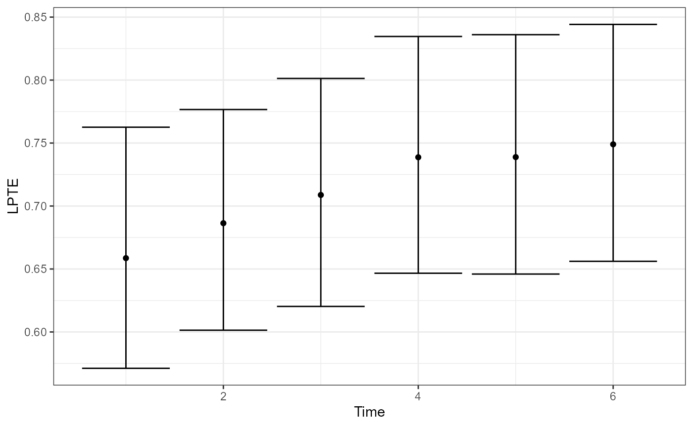
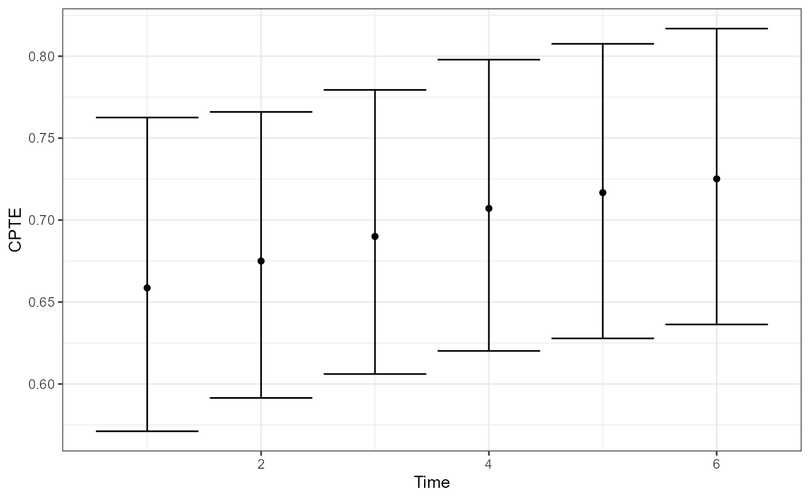
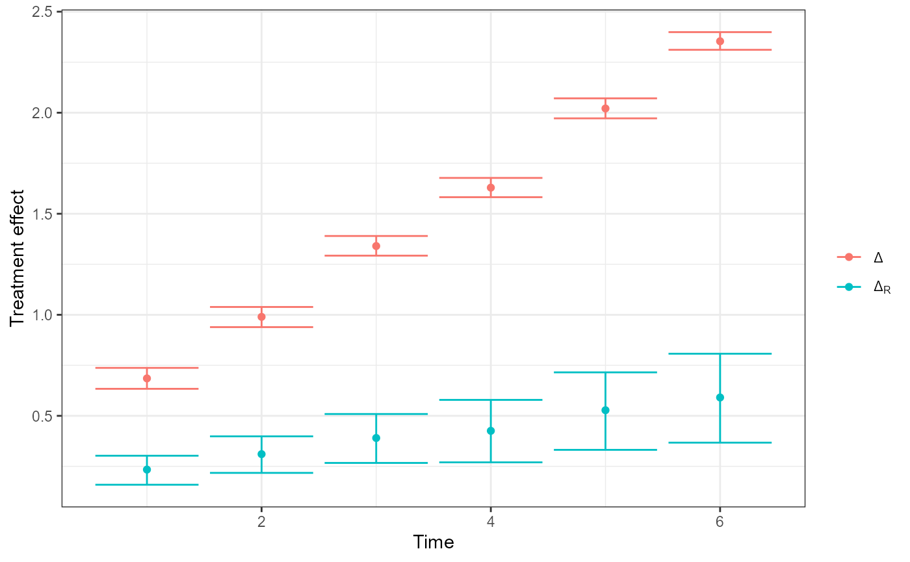

OnlineSurr: Fitting marginal/conditional models and computing LPTE/CPTE
Source:vignettes/vignette.Rmd
vignette.RmdThis vignette demonstrates the main workflow of the
OnlineSurr package:
- Prepare a longitudinal dataset with equally-spaced measurement times.
- Fit the marginal and conditional models with
fit.surr(). - Summarize results with
summary(), visualize withplot(). - Test time-homogeneity with
time_homo_test().
The package returns a fitted object of class
fitted_onlinesurr that stores point estimates and bootstrap
draws for treatment-effect trajectories and PTE-based summaries.
Data requirements and conventions
fit.surr() expects data in long format
with one row per subject-time measurement. Key requirements enforced by
the code:
-
ididentifies subjects; there must be at most one observation per subject-time combination. -
treatindicates treatment assignment; it is coerced to a factor and is intended to represent two treatment levels. -
timemust be numeric and equally spaced across observed time points. Iftimeis omitted, the function creates a within-subject indexTimeassuming the data are already ordered and equally spaced. - The surrogate design must not make treatment a linear combination of surrogate terms; otherwise the conditional model is not identifiable.
Package functions used in this vignette
-
fit.surr()fits:- a marginal model producing total treatment effects
- a conditional model (given surrogate) producing residual treatment effects
- stores bootstrap draws for the corresponding fixed-effect parameters.
-
plot.fitted_onlinesurr()plots:- Local PTE:
- Cumulative PTE:
- Treatment effects and
-
time_homo_test()tests the hypothesis that the PTE is constant over time (implemented via a max-type statistic and Monte Carlo approximation of the null).
A complete worked example (simulated data)
This section builds a minimal simulated dataset consistent with the
checks inside fit.surr().
set.seed(1)
# Dimensions
N <- 100 # subjects
T <- 6 # time points
times <- seq_len(T) # numeric, equally spaced
# Subject IDs and treatment assignment (two levels)
id <- rep(seq_len(N), each = T)
trt <- rep(rbinom(N, 1, 0.5), each = T) # 0/1
time <- rep(times, times = N)
# Simulate surrogate(s) and outcome
# Surrogate is affected by treatment and time
s <-
0.2 * time + # Trend
(0.2 + 0.4 * time) * trt + # Treatment effect
rnorm(N * T, sd = 0.1) # Noise
# Outcome depends on treatment effect, time trend, surrogate, and noise
y <-
0.2 + # intercept
0.1 * time + # Trend
(0.2 + 0.1 * time) * trt + # (direct) treatment effect
0.6 * s + # Surrogate effect
rnorm(N * T, sd = 0.1) # Noise
dat <- data.frame(
id = id,
trt = trt,
time = time,
s = s,
y = y
)
# Ensure the data are ordered by (id, time) (recommended)
dat <- dat[order(dat$id, dat$time), ]
head(dat)
#> id trt time s y
#> 1 1 0 1 0.2398106 0.4499785
#> 2 1 0 2 0.3387974 0.5209293
#> 3 1 0 3 0.6341120 1.0634402
#> 4 1 0 4 0.6870637 0.8692466
#> 5 1 0 5 1.1433024 1.4113951
#> 6 1 0 6 1.3980400 1.3448466Fitting the models with fit.surr()
fit.surr() requires:
-
formula: outcome mean model. The function will internally add treatment-by-time fixed effects. -
id: subject identifier (unquoted). -
treat: treatment variable (unquoted). -
surrogate: surrogate structure (as a formula or a string). -
time: numeric time variable (unquoted).
library(OnlineSurr)
fit <- fit.surr(
formula = y ~ 1, # baseline fixed effects; trt*time terms added internally
id = id,
surrogate = ~s, # surrogate structure
treat = trt,
data = dat,
time = time,
N.boots = 2000, # bootstrap draws stored in the fitted object
verbose = 0 # hide progress
)The formulas for the fixed effects and the surrogate structures
accept any temporal structure available in the kDGLM
package (see its vignette for details). Functions that transform the
data are also supported.
In particular, we provide the lagged function, which
computes lagged values of its arguments and can be included in a model
formula to account for delayed or lingering effects of a predictor over
time. We also provide the s function, which generates a
spline basis for a numeric variable and can be used to model smooth,
potentially non-linear effects without having to specify the basis
expansion manually.
library(OnlineSurr)
fit <- fit.surr(
formula = y ~ 1, # baseline fixed effects; trt*time terms added internally
id = id,
surrogate = ~ s(s) + s(lagged(s, 1)) + s(lagged(s, 2)), # surrogate structure
treat = trt,
data = dat,
time = time,
verbose = 0 # hide progress
)What fit.surr() stores
The returned object has class fitted_onlinesurr and is a
list with (at least):
-
fit$T: number of time points -
fit$N: number of subjects -
fit$n.fixed: number of fixed-effect coefficients per subject design (reference size) -
fit$Marginal$point: point estimates (vector) from the marginal model -
fit$Marginal$smp: bootstrap draws (matrix) from the marginal model -
fit$Conditional$point: point estimates (vector) from the conditional model -
fit$Conditional$smp: bootstrap draws (matrix) from the conditional model
The first T (in practice, the first
n.fixed) elements used by plotting/testing methods
correspond to the time-indexed treatment-effect parameters.
Summaries and inference
Printing a summary
The package provides an S3 summary method
summary.fitted_onlinesurr().
-
tselects the time index. -
cumulative=TRUEreports cumulative effects up to timet(when implemented by the method). -
cumulative=FALSEreports time-specific quantities at timetonly.
summary(fit, t = 6, cumulative = TRUE)
#> Fitted Online Surrogate
#>
#> Cummulated effects at time 6:
#> Estimate Std. Error t value Pr(>|t|)
#> Delta 9.01931 0.05600 161.06739 0.0000e+00 ***
#> Delta.R 2.47893 0.41384 5.99008 2.0973e-09 ***
#> CPTE 0.72515 0.04604 - -
#>
#> Time homogeneity test:
#>
#> Test stat. Crit. value p-value
#> 1.12582 2.45246 0.61942
#> ---
#> Signif. codes: 0 ‘***’ 0.001 ‘**’ 0.01 ‘*’ 0.05 ‘.’ 0.1 ‘ ’ 1Plotting LPTE, CPTE, and treatment effects
plot() dispatches to
plot.fitted_onlinesurr().
plot(fit, type = "LPTE") # Local PTE over time
plot(fit, type = "CPTE") # Cumulative PTE over time
plot(fit, type = "Delta") # Delta and Delta_R over time
Interpretation notes:
- LPTE measures, at each time, the proportion of the total treatment effect explained by the surrogate, using the ratio .
- CPTE aggregates effects up to time , using cumulative sums.
Testing time-homogeneity
time_homo_test() provides a max-type test, using a Monte
Carlo approximation of the null distribution.
test <- time_homo_test(fit, signif.level = 0.05, N.boots = 50000)
test
#> $T
#> [1] 1.125824
#>
#> $T.crit
#> 95%
#> 2.449603
#>
#> $p.value
#> [1] 0.61756Returned components:
-
T: observed test statistic -
T.crit: critical value at the requested significance level -
p.value: Monte Carlo p-value
Practical tips and common pitfalls
Time index must be numeric and equally spaced.
If you have missing measurements, include the missing time points withNAoutcomes rather than dropping those times, so spacing remains consistent.One row per subject-time.
If you have duplicates, aggregate first (e.g., average within a time window) or decide which measurement to keep.Bootstrap size tradeoff.
fit.surr(N.boots=...)controls stored bootstrap draws used for confidence intervals associated with the treatment effect, LPTE and CPTE;time_homo_test(N.boots=...)controls Monte Carlo draws for the null distribution of the time homogeneity test.
See Santos Jr. and Parast (2026) for details about the theoretical aspects of the package.
Session info
sessionInfo()
#> R version 4.5.1 (2025-06-13 ucrt)
#> Platform: x86_64-w64-mingw32/x64
#> Running under: Windows 10 x64 (build 19045)
#>
#> Matrix products: default
#> LAPACK version 3.12.0
#>
#> locale:
#> [1] LC_COLLATE=English_United States.utf8
#> [2] LC_CTYPE=English_United States.utf8
#> [3] LC_MONETARY=English_United States.utf8
#> [4] LC_NUMERIC=C
#> [5] LC_TIME=English_United States.utf8
#>
#> time zone: America/Chicago
#> tzcode source: internal
#>
#> attached base packages:
#> [1] stats graphics grDevices utils datasets methods base
#>
#> other attached packages:
#> [1] OnlineSurr_0.0.2
#>
#> loaded via a namespace (and not attached):
#> [1] sass_0.4.10 generics_0.1.4 tidyr_1.3.2
#> [4] digest_0.6.37 magrittr_2.0.3 evaluate_1.0.5
#> [7] grid_4.5.1 RColorBrewer_1.1-3 fastmap_1.2.0
#> [10] jsonlite_2.0.0 extraDistr_1.10.0 kDGLM_1.2.14
#> [13] purrr_1.0.4 scales_1.4.0 textshaping_1.0.4
#> [16] jquerylib_0.1.4 Rdpack_2.6.5 cli_3.6.5
#> [19] rlang_1.1.7 zigg_0.0.2 rbibutils_2.4.1
#> [22] withr_3.0.2 cachem_1.1.0 yaml_2.3.12
#> [25] otel_0.2.0 tools_4.5.1 dplyr_1.1.4
#> [28] ggplot2_4.0.2 latex2exp_0.9.8 Rfast_2.1.5.1
#> [31] vctrs_0.6.5 R6_2.6.1 lifecycle_1.0.5
#> [34] fs_1.6.6 htmlwidgets_1.6.4 ragg_1.5.0
#> [37] pkgconfig_2.0.3 desc_1.4.3 pkgdown_2.2.0
#> [40] RcppParallel_5.1.10 pillar_1.11.1 bslib_0.10.0
#> [43] gtable_0.3.6 glue_1.8.0 Rcpp_1.1.0
#> [46] systemfonts_1.3.1 xfun_0.52 tibble_3.3.1
#> [49] tidyselect_1.2.1 rstudioapi_0.18.0 knitr_1.51
#> [52] farver_2.1.2 htmltools_0.5.8.1 rmarkdown_2.31
#> [55] labeling_0.4.3 compiler_4.5.1 S7_0.2.1